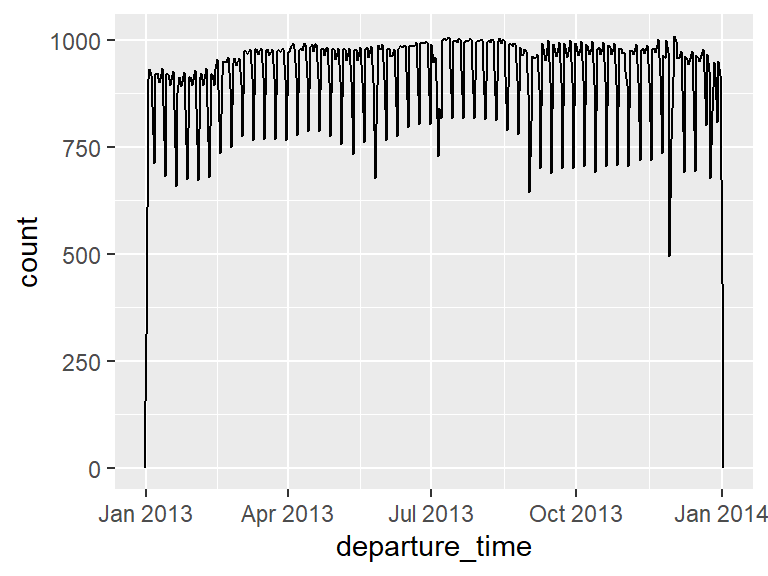
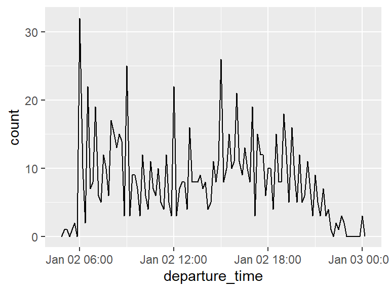
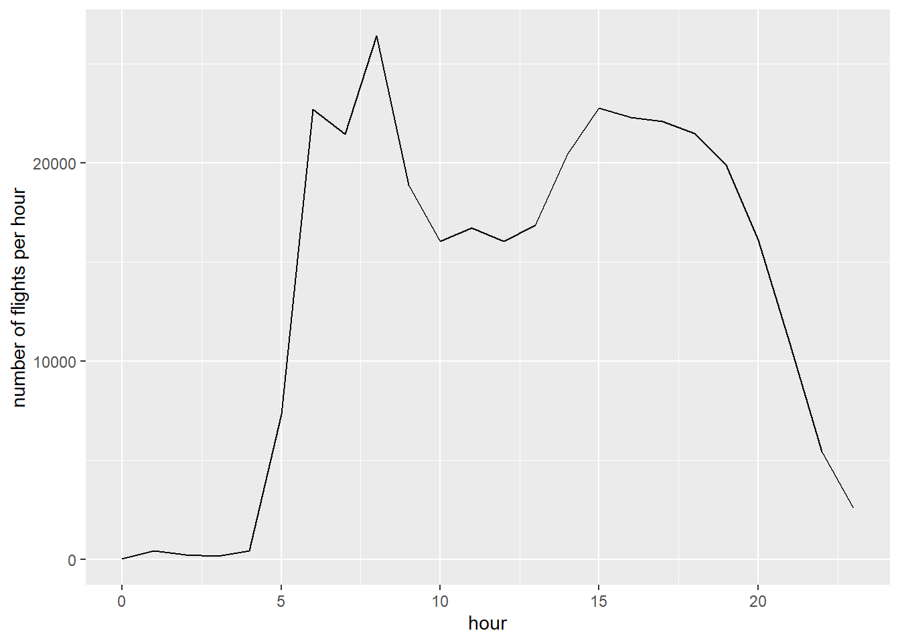

Working with date-time data in R can be challenging due to the unintuitive and inconsistent commands across different date-time objects. Additionally, managing things like time zones, leap days, and daylight saving time can be tricky since R doesn’t always handle these well. The lubridate and hms packages (loaded as part of tideverse) simplify date-time operations in R, making it easier to perform common tasks and enabling functionalities that R’s base capabilities do not support. Unfortunately, we don’t have enough time to cover all the details in this session. Instead, we will only give short introduction on how to work and manipulate date and time variables in R using the lubridate and hms packages. But if you want to learn more please have a look at the R for Data Science ebook.
First, what do we mean by Date/Time data? well, when we speak of Date/Time data we are mainly referring to three data types:
Date - a variable containing only the date when an observation was made (e.g. 2024-07-12). More formally, it is a day stored as the number of days since 1970-01-01
Time - a variable containing only the time when an observation was made (e.g. 18:15:00). Formally , the number of seconds since 00:00:00
Date & Time - combination of both the date and time (e.g. 2024-07-12 18:15:00). Formally, is a point on the timeline, stored as the number of seconds since 1970-01-01 00:00:00 UTC
There are several ways in which Date-time variables can be created. Here are some examples:
# Example 1: string input with date Y/M/D formatymd("2017-01-31")
[1] "2017-01-31"
# Example 2: string input with date M/D/Y formatmdy("January 31st, 2017")
[1] "2017-01-31"
# Example 3: string input with date D/M/Y formatdmy("31-Jan-2017")
[1] "2017-01-31"
# Example 4: numeric input with date M/D/Y formatmdy(07082016)
[1] "2016-07-08"
# Examples 5: string input with time H:M formatehm("20:11")
[1] "20H 11M 0S"
# Example 6: string input with date-time D/M/Y H:M:Symd_hms("2017-01-31 20:11:59")
[1] "2017-01-31 20:11:59 UTC"
In this session, instead of creating data-time variables by ourselves, we will focus on already existing Date/Time Data. Let’s look at some of the date-time variables in the flights data set, namely the scheduled departure dates and times:
Instead of having separate date-time variables spread across different columns, we can use the make_date() or make_datetime()functions to create new date and date-time variables respectively:
We then can visualize the distribution of the scheduled departure times across the year with ggplot by adding a geom_freqpoly() layer (which is similar to an histogram where the counts are displayed with lines instead of bars). Note that when you use date-times in a numeric context (like in a histogram), a binwidth of 1 is equivalent to 1 second, so a binwidth of 86400 is equivalent to one day.
Code
flights_dep%>%ggplot(aes(x =departure_time))+geom_freqpoly(binwidth =86400)# 86400 seconds = 1 day

Likewise, if were interested in the distribution of the scheduled departures for a given day:
Code
flights_dep%>%filter(departure_date==ymd(20130102))%>%ggplot(aes(x =departure_time))+geom_freqpoly(binwidth =600)# 600 s = 10 minutes

In here, binwidth = 600 means we are clumping all flights within each 10 minutes (600 s) together into one single data point in our frequency polygon.
Now, notice that in the original flights data set, the hour and minute of the actual departure (dep_time) and arrival times (arr_time) are encoded together into a single integer. Let make a function that sets the actual times in a sensible format:
The new make_datetime_flights() function we just created separates the hour and minute of a given HM input and pass it on to make_datetime function. This is achieved by using a vectorized case_when argument based on the number of characters in the integer that uses the %/% or%% operator to find (or discards accordingly) the remainder of an integer division to obtain the hour and minute components (e.g. 951 %/% 100 and 951 %% 100 splits the entry 951 into 9 and 51 (9:15 am once converted to time-date data) while 15 %/% 10 and 15 %% 10 and gives 1 and 5 (equivalent to 1:05 am in date-time format) .
The lubridate package also provide us with different tools for extracting specific components from date-time objects (e.g. year, month, hours, minutes, etc). Suppose we are interested in finding out which day of the week each flight took place. The wday() functions allow us to extract the numeric entry of the day of the week, by including the argument label =TRUE, we can also print the name of the weekday as the output
[1] Jul
12 Levels: Jan < Feb < Mar < Apr < May < Jun < Jul < Aug < Sep < ... < Dec
Code
day(datetime)
[1] 8
Code
hour(datetime)
[1] 12
Code
minute(datetime)
[1] 34
Task
Can you make a plot showing how does the distribution of flight times within a day change over the course of the year? i.e., how many flights have taken off by each hour. Comment on the patterns
Within a day, we want to observe how the flight times differ. This means we should look at how flight times differ by the hour (i.e how many flights are taking off at every hour of the day). You can use the hour() function to extract the hours for every departure time and then count (using summarize()) how many flights have taken off by each hour. You can visualize the trend using geom_line in ggplot.
Code
flights_dt%>%mutate(hour =hour(dep_time))%>%summarize(numflights_per_hour =n(),.by=hour)%>%ggplot(aes(x =hour, y =numflights_per_hour))+geom_line()+labs(y="number of flights per hour",x ="hour")

We can see there is a peak of flights around 8am, a dip in flights from 10am-12pm, and then a drop off in number of flights past 7pm.
Task
Find out on what day of the week should you leave if you want to minimise the chance of a delay?
To find the days of the week that have the lowest average delay, first you need to assign a day to each observation using wday(). You can then use summarize() and group by the the day of the week to find the average delay time for each day of the week.
# A tibble: 1 × 3
wday avg_dep_delay_week avg_arr_delay_week
<ord> <dbl> <dbl>
1 Sat 7.62 -1.45
Code
# Saturday has the lowest average delay at 7.61, and on average the flights even arrive earlier than expected!
We can see there is a peak of flights around 8am, a dip in flights from 10am-12pm, and then a drop off in number of flights past 7pm.
1.2 Time intervals, durations and periods
Now that we have seen a few examples of R’s date-time data structures, lets look into some of the time span classes.
Duration: exact number of seconds.
Periods: human units like weeks and months.
Intervals: a time span defined by a start and end point.
Duration is simply defined by the exact amount of time between two time events. It does not consider what these two events are in terms of,e.g. calendar years or time zone (so things like leap years would be ignored), and the output is shown in seconds. For example, say we want to manually compute the departure delays in the flights data set (we will use the flights_dt data frame we created previously which has the dep_time and sched_dep_times in the correct date-time format).
At first glance, we can see that the manually computed departure delays dep_delay_manual and the original delays dep_delay are not on the same format. By default, when you subtract two dates (e.g. dep_time - sched_dep_time), you get a difftime object which records a time span of seconds, minutes, hours, days, or weeks. This variability can make difftime objects difficult to work with. To address this, we can use convert a difftime object to a duration class using the as.duration() function. Additionally, the original delays dep_delay, which are measured in minutes but have no default date-time format, can also be transformed into a duration class using the duration(units ="") function.
Durations always record the time span in seconds. Instead, periods represent time spans without a fixed length in seconds; they work with “human” times, such as days and months. This allows them to operate in a more intuitive manner. periods can be created with different functions, here are some examples:
The last type of time-span defined in lubridate are intervals. As with durations, intervals are expressed in physical time spans defined by a start and end points that are real date-times, i.e. intervals are durations defined by a calendar time. Lets suppose we are only given the scheduled departure times and the departure delay. We can create an interval time-span to compute the actual departure time as follows: